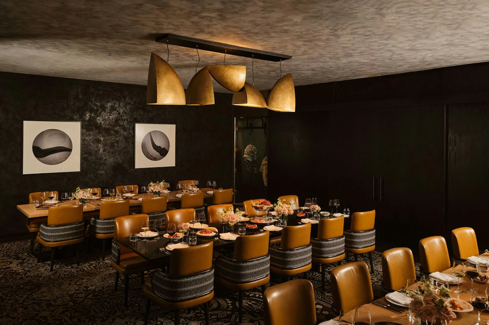
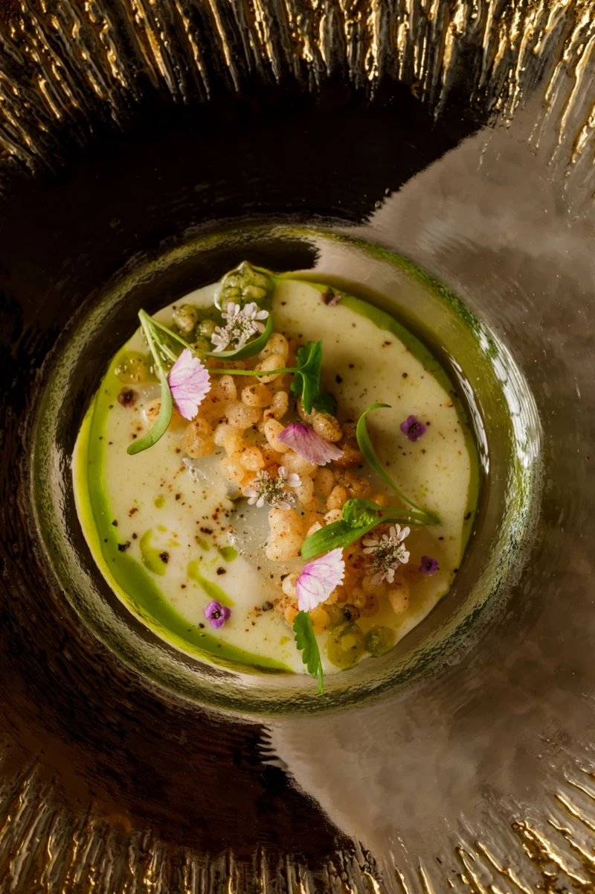
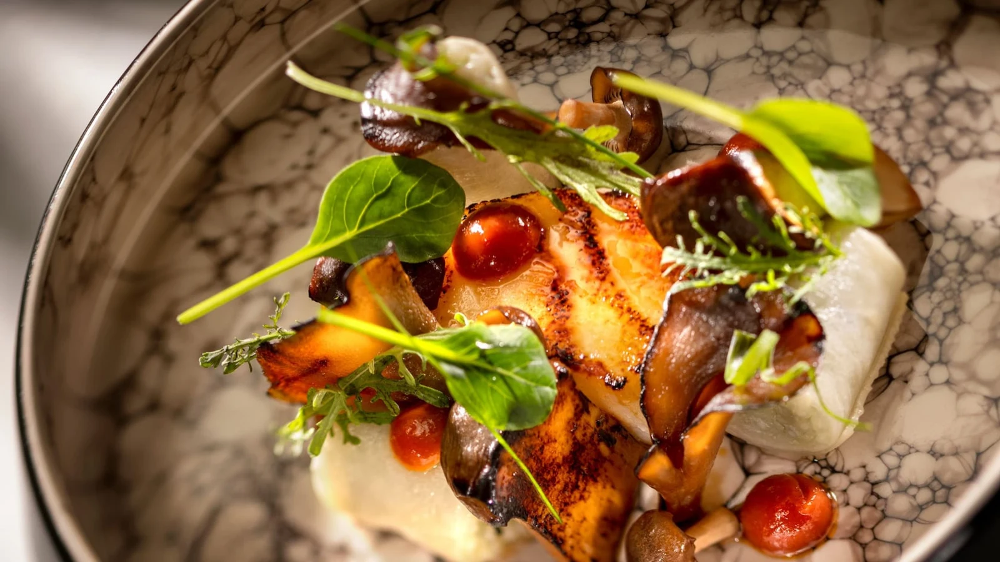

01 / Spanish steakhouse · Four Seasons
Steak, Rioja
& a sky full of sparks.
Wood-fired steaks and Spanish tapas, then a toast on the 17th-floor terrace.
4.6 / 5 · Google ↗Our steakhouse pick
Three very different evenings. Just the two of you.

Wood-fired steaks and Spanish tapas, then a toast on the 17th-floor terrace.
Start at Capa Bar, above the resort.
Tapas, a wood-grilled steak, a glass of Rioja.
Fireworks views, if the evening’s schedule aligns.
Published cuts: strip $68, filet $76, ribeye $95; premium cuts cost more. Sides, drinks, tax and gratuity extra. Normal service is à la carte; confirm the holiday menu. Capa normally lists Spanish guitar Wednesdays and Saturdays, 6–9 p.m., making December 30 appealing. Holiday performances and fireworks times are unconfirmed. This is a rooftop evening, not a neighborhood stroll.

Vietnamese flavors, French technique, and an intimate chef-led tasting experience.
A little time together before the first course.
A seasonal progression; wine pairings optional.
A short village stroll, weather permitting.
A tasting menu is the normal format—not an à la carte alternative or a holiday-only set menu. Confirm current pricing, service dates and table versus counter seating before choosing. Wine, tax and service charges are additional. Holiday availability has not been checked. Photography: Camille’s official gallery.

Live harp, a grand dining room, and an unhurried tasting menu. Dinner is the evening.
Semi-formal or formal. This is the night to dress up.
Seasonal courses, personal service, live harp.
No second reservation. Linger over the last course.
From $590 for two before tax and gratuity. Optional pairings start at $155 per person for wine or $115 for zero-proof. Advance reservations required; availability is not confirmed. This is the normal tasting-menu format. Disney notes Grand Floridian renovation work through early 2027, including the entrance area; daytime noise and alternate walking paths are possible. Valet included. Check cancellation terms.